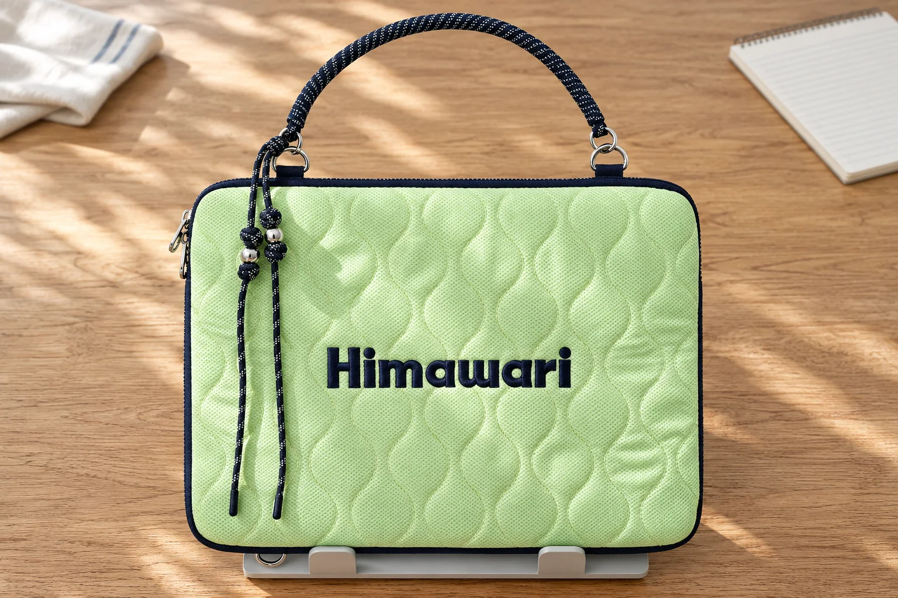
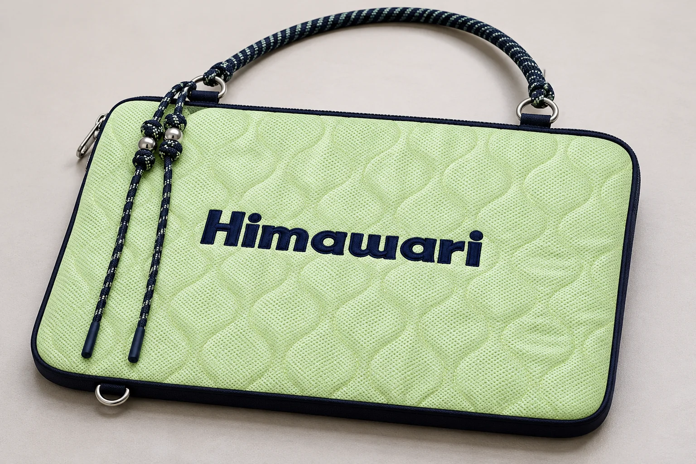
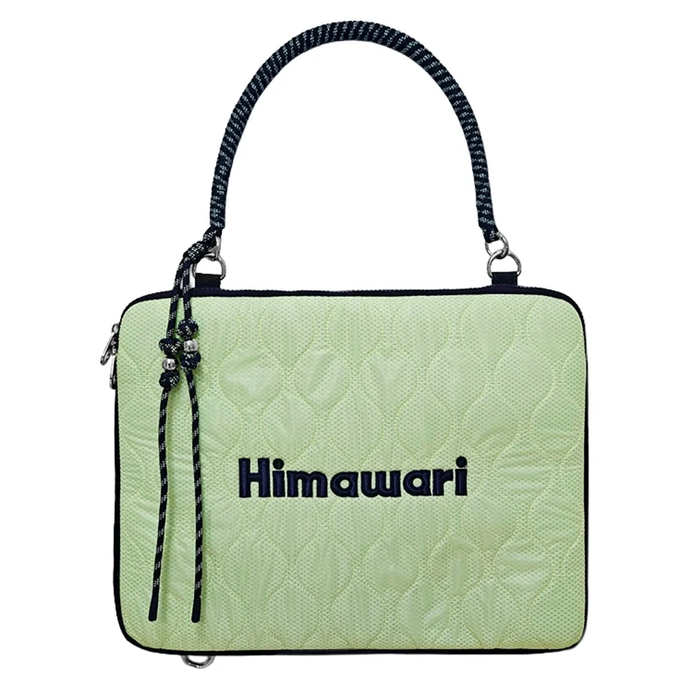

노트북 파우치의 누빔 사진에서 완충 정도까지 읽을 수 있을까

온라인에서 노트북 파우치를 고를 때 확대 사진을 열면 먼저 바늘땀이 눈에 들어옵니다. 한 칸씩 도톰하게 올라온 겉면을 보고 기기를 어느 정도 감싸 줄지 짐작하기 쉽습니다. 그런데 파우치가 책상 모서리에 닿을 때와 가방 속에서 충전기가 파우치의 옆선을 누를 때는 닿는 자리부터 다릅니다. 같은 파우치라도 누빔이 보이는 앞면과 지퍼가 달린 가장자리에서 확인할 부분이 다릅니다. 확대 사진에서 눈에 보이는 부분부터 살펴보면 상세 페이지에서 어떤 사진과 설명을 더 찾아야 할지 알 수 있습니다.
사진으로 먼저 확인할 수 있는 표면
히마와리 No.2513 민트의 실제 제품 사진을 보면 연둣빛이 도는 겉면에 물결 모양의 누빔선이 이어집니다. 밝은 몸판 가운데에 짙은 글자가 있고 가장자리에도 짙은 테두리가 둘러져 있습니다. 끈 손잡이는 위쪽의 두 고리에 연결돼 있습니다. 물결선 사이의 면은 빛을 받는 각도에 따라 조금씩 다르게 보입니다. 한낮에 찍은 사진과 조명을 옆에서 비춘 사진이 함께 있다면 무늬가 이어지는 방향과 가장자리에서 끝나는 자리부터 찾아보세요. 두 사진의 같은 위치에서 골이 어떻게 보이는지 비교하면 빛과 그늘에 따라 겉감의 모양이 얼마나 달라 보이는지 알 수 있습니다.
이때 앞면만 확대하면 파우치에서 가장 먼저 닿는 부위를 놓치기 쉽습니다. 평소 손에 들어 옮긴다면 손잡이를 잡은 상태에서 아래로 향하는 모서리를 떠올려 보세요. 다른 백팩에 세워 넣는다면 입구 가까이에 어느 테두리가 남는지 생각해 볼 수 있습니다. 어느 방향으로 넣고 꺼내는지에 따라 살펴볼 사진도 달라집니다. 정면 사진에서 앞면의 무늬를 본 다음 같은 제품의 옆면이나 지퍼 끝이 보이는 사진을 찾아보세요.

두께 표기가 가리키는 범위
제조사 카탈로그에 나온 No.2513의 외부 크기는 가로 36.5cm, 세로 28cm, 폭 2cm입니다. 마지막 숫자는 파우치의 바깥쪽 폭을 가리킵니다. 이 수치만으로 앞뒤 겉감이나 안감, 봉제 부분의 두께를 각각 계산하기는 어렵습니다. 지퍼와 테두리를 포함해 어떤 자세에서 잰 값인지도 확인해 볼 만합니다. 상품 설명에서 내부 치수와 지퍼가 열린 실제 폭을 확인하세요. 케이스를 씌운 기기의 두께도 재서 함께 비교합니다. 파우치 바깥 치수에서 임의로 몇 밀리미터를 뺀 값으로는 실제 내부 치수를 알기 어렵습니다.
정면 사진과 옆면 사진을 나란히 놓으면 확인하는 내용을 나눌 수 있습니다. 정면 사진에서는 물결선이 넓은 면에 어느 정도 이어지는지 봅니다. 옆으로 낮춰 찍은 사진에서는 테두리와 지퍼가 한 화면에 잡히는지 확인합니다. 앞면이 도톰해 보이는 두 제품 사이에서 고민한다면 가장자리를 보여 주는 사진이 있는 쪽도 눈여겨보세요. 가방 안에 파우치를 얇은 종이 파일과 나란히 둘 때와 금속 플러그가 달린 충전기를 바로 옆 칸에 둘 때 살펴볼 위치도 다릅니다. 충전기가 바로 옆에 온다면 기기 모서리 주변을 파우치가 어떻게 감싸는지 보여 주는 자료도 필요합니다.

판매 페이지에서 찾을 문장은 따로 있다
완충이 중요한 사람이라면 상세 페이지에서 안쪽을 보여 주는 사진과 안감·보호층에 관한 설명을 먼저 찾으세요. 소재 이름이 나와 있다면 어느 부위에 쓰였는지 문장 앞뒤를 함께 읽습니다. '푹신한 느낌'이라는 문구는 손에 닿는 인상을 전합니다. 낙하나 충격을 얼마나 견디는지 알고 싶다면 시험한 물체와 높이 또는 시험 부위 등 시험 조건과 결과가 공개됐는지 확인해야 합니다. 제조회사가 시험 조건을 밝힌 자료를 찾지 못했다면 성능을 숫자로 추정하기도 어렵습니다.
온라인 문의를 남길 때는 막연히 보호가 되는지 묻기보다 궁금한 자리를 찍어 묻는 편이 답을 비교하기 쉽습니다. 예를 들어 "지퍼 옆 모서리에도 앞면과 같은 보호층이 이어지나요?"처럼 부위를 정할 수 있습니다. "케이스를 씌운 기기를 넣고 닫았을 때 옆면에 닿는지 보려면 어디를 재야 하나요?"라고 물으면 내부 사진이나 치수를 받을 때 어떤 정보를 확인해야 하는지도 분명합니다. 답변에 수치가 있다면 가로, 세로, 폭 가운데 무엇인지 적어 두세요. 비슷한 숫자를 내세운 다른 모델이 있어도 같은 부위의 값인지부터 맞춰 볼 수 있습니다.
고르기 전에 내 가방 안에서 닿는 자리를 그려 보기
매일 파우치를 책상에서 다른 책상으로 옮겨 다닌다면 어느 높이에서 꺼내는지 한 번 살펴보세요. 파우치를 한 손에 들고 문을 열 때 손잡이가 돌아가는 방향도 자주 체감할 수 있습니다. 출근길에 여러 물건과 함께 넣는 사람이라면 파우치를 넣는 칸과 충전기나 책 모서리가 놓이는 칸 사이가 얼마나 벌어지는지부터 보세요. 기존 가방 안에서 자주 쓰는 자리에 얇은 판지나 빈 서류봉투를 잠시 세워 보면 실제 기기를 밀어 넣지 않고도 어느 쪽 테두리가 먼저 걸릴지 대략 살펴볼 수 있습니다. 그다음에 필요한 크기와 자료를 판매 페이지에서 확인하면 됩니다.
파우치 사진을 고르는 데 시간을 많이 들일 필요는 없습니다. 정면에서 누빔선과 손잡이를 보고 옆에서 테두리와 지퍼를 보세요. 사용 중 특히 보호가 필요한 자리는 제조사 자료에서 확인하면 됩니다. 민트색 물결이 마음에 드는 이유와 기기를 담을 때 확인해야 할 조건을 각각 적어 두면 같은 사진을 보더라도 선택에 필요한 질문을 더 정확히 남길 수 있습니다.